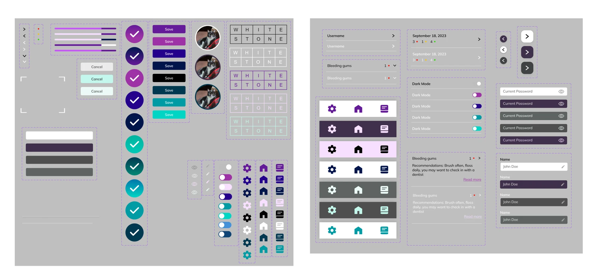
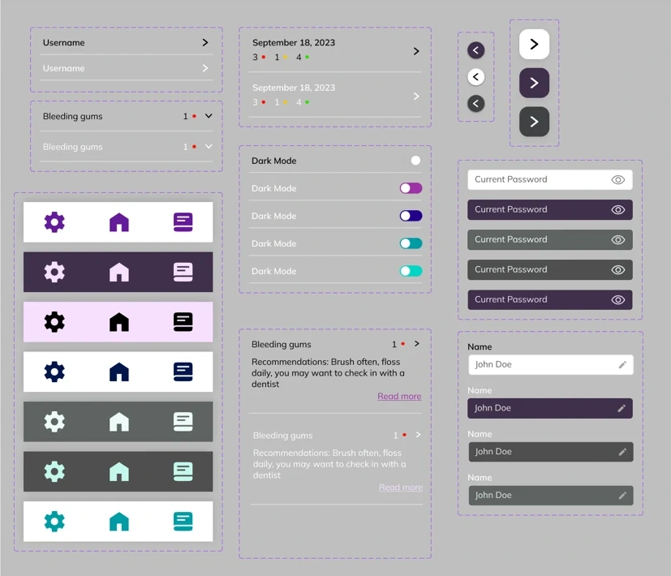
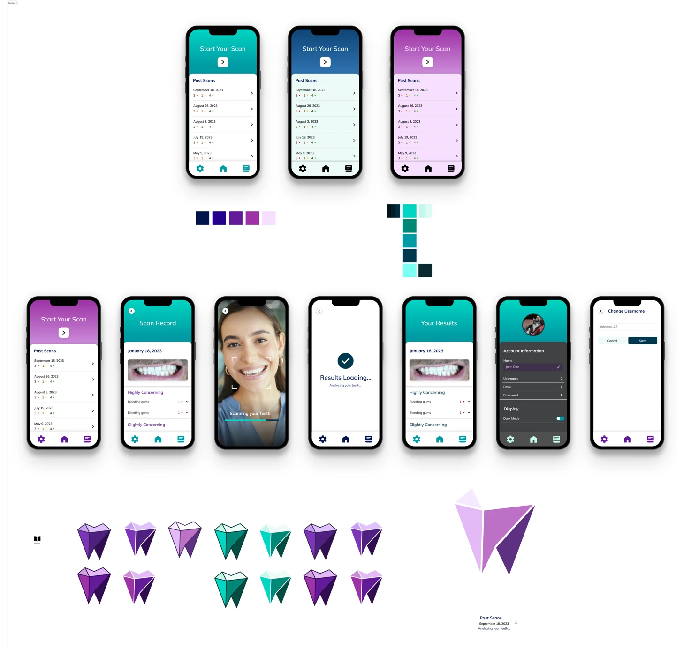
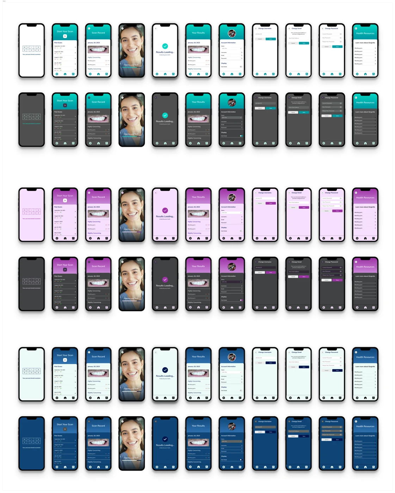
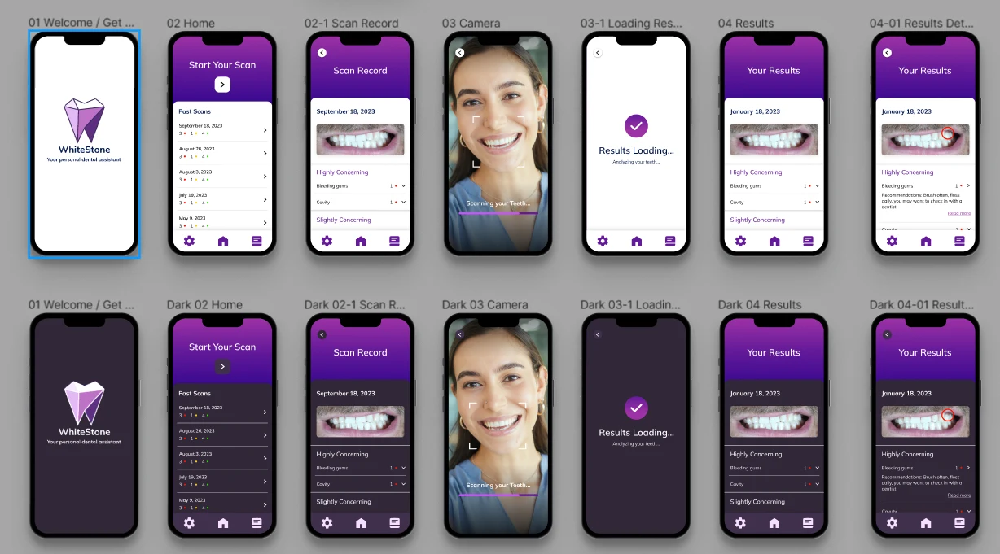
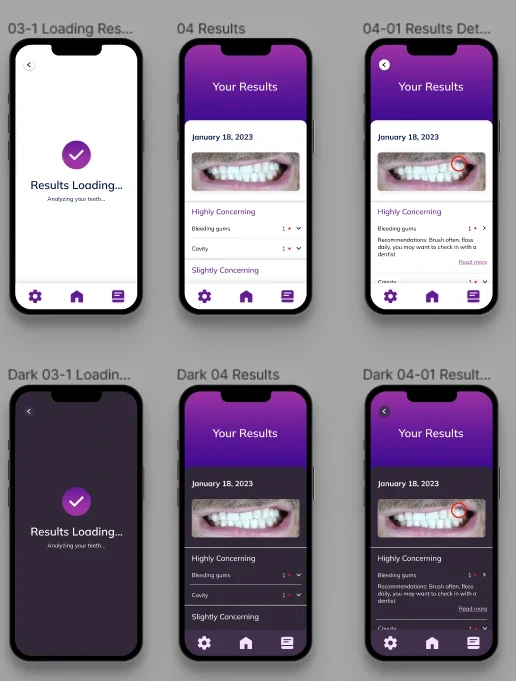
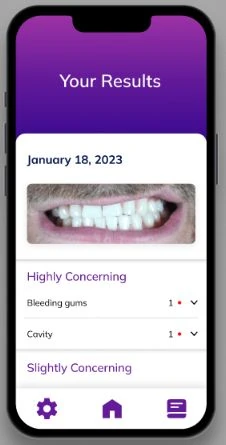
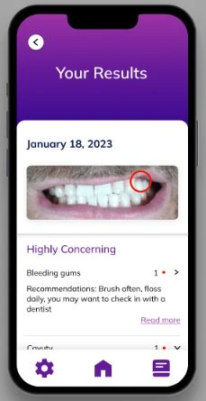
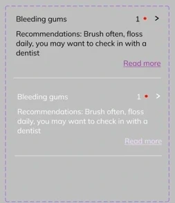

What the team set out to build
WhiteStone was a student prototype for communicating oral-health screening findings. A user needed to understand their results and find helpful reading without having to interpret the raw output.
My design and implementation contribution
I used team personas and wireframes to work through the results experience, including grouping findings by severity and giving users a path from a finding to related resources. I built the results flow and Health Resources components in Next.js and contributed to the prototype presentation.
From component to prototype
The gallery shows the shared components, wireframe alternatives and high-fidelity work that guided implementation. For the results interface, labelled severity states give a finding a readable status and the resource section provides a follow-up path.
Figma designs and handoff
My Figma contribution
I used team personas and wireframes to work through the oral-health results flow. The design boards show early alternatives, shared components, severity labels and loading and result states. I carried the result and related resource patterns into the Next.js implementation.
Try the Figma component states
Compare a compact result row with the detail it reveals. The example uses fictional scan content. This browser example is based on the Figma design.
Scan finding
Review recommended
One finding is ready to review.
Scan finding
Review recommended
The expanded view explains the result and identifies a relevant health resource.
Related resource · Preparing questions for a dental appointment
Components and prototype

The original design export groups actions, inputs, status indicators and navigation.

A closer look at navigation, the severity indicator and the expandable recommendation in light and dark variants.

The board explores different colour treatments and their application across common screens.

Several structures helped the team review the steps before progressing to the high-fidelity design.

Two versions of the complete path from onboarding to scanning and results.

Three adjacent states show how the product moves from processing to the result summary and supporting guidance.
Results screen close-ups

Severity labels and grouped findings help users understand the scan before opening a detail.

Opening a finding highlights the corresponding area and reveals guidance with a link to read more.
Reusable UI close-ups

Light and dark treatments keep the finding, recommendation copy and related resource action in the same layout.
| Figma pattern | What the source shows | Handoff decision |
|---|---|---|
| Capture and image confirmation | The board shows scanning and how the user moves from the camera to the selected image. | Give users a clear point to accept the image or retake it. |
| Result and resource patterns | Design exports show reusable result elements, severity treatments and related resources. | Maintain readable status labels and a clear path from findings to education. |
| Reusable UI and variants | The exported team boards include navigation, buttons and colour and size variations. | Carry visual and interaction decisions into the Next.js components. |